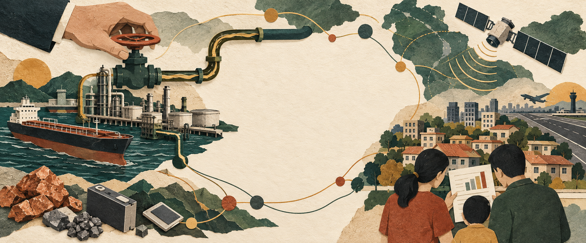

AI 生成概念插畫每週回望 / 2026-10-18—2026-10-24
依賴如何變成代價，又如何換回選擇？
10/18–10/24 修訂回望：對照 10/11–10/17 的記事，看資金、能源與科技的問題如何延續，也分清後來的補充與修正。
「但如果可以把AI當作輔助，來提升自己的表達能力，那就會很有幫助。」— 記事原文
24 篇記事 · 8 個議題 · 9 部影片閱讀這期整理 →
從一支影片，讀懂正在發生的世界。

AI 生成概念插畫10/18–10/24 修訂回望：對照 10/11–10/17 的記事，看資金、能源與科技的問題如何延續，也分清後來的補充與修正。
「但如果可以把AI當作輔助，來提升自己的表達能力，那就會很有幫助。」— 記事原文
從在意的地方出發，把事件、來源與自己的觀察連起來。
議題與記事沿用 GitHub 同步與匯出，儲存後公開。
22 縣市 · 中央 · 國際左右滑動選擇